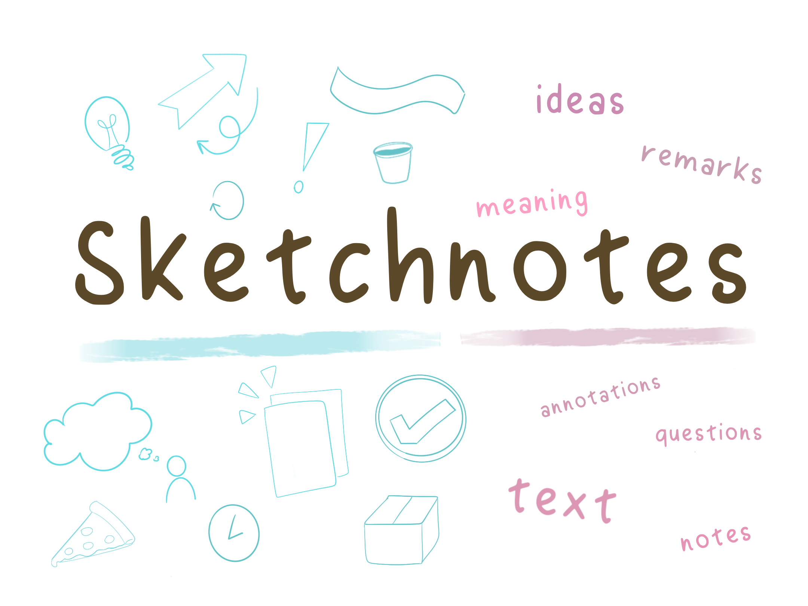
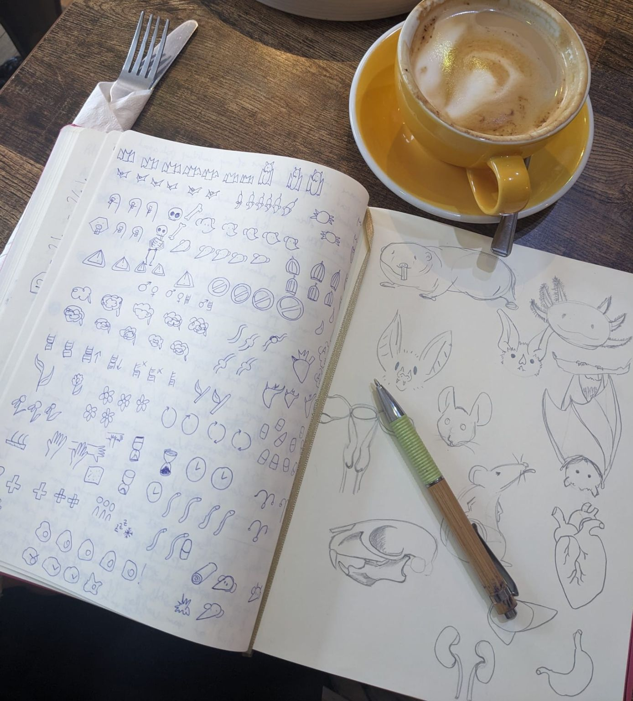
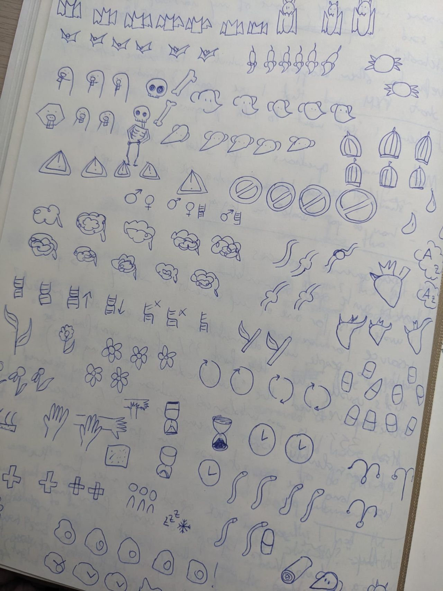
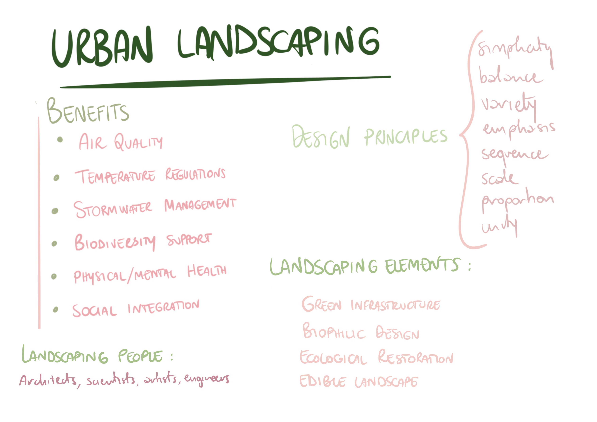
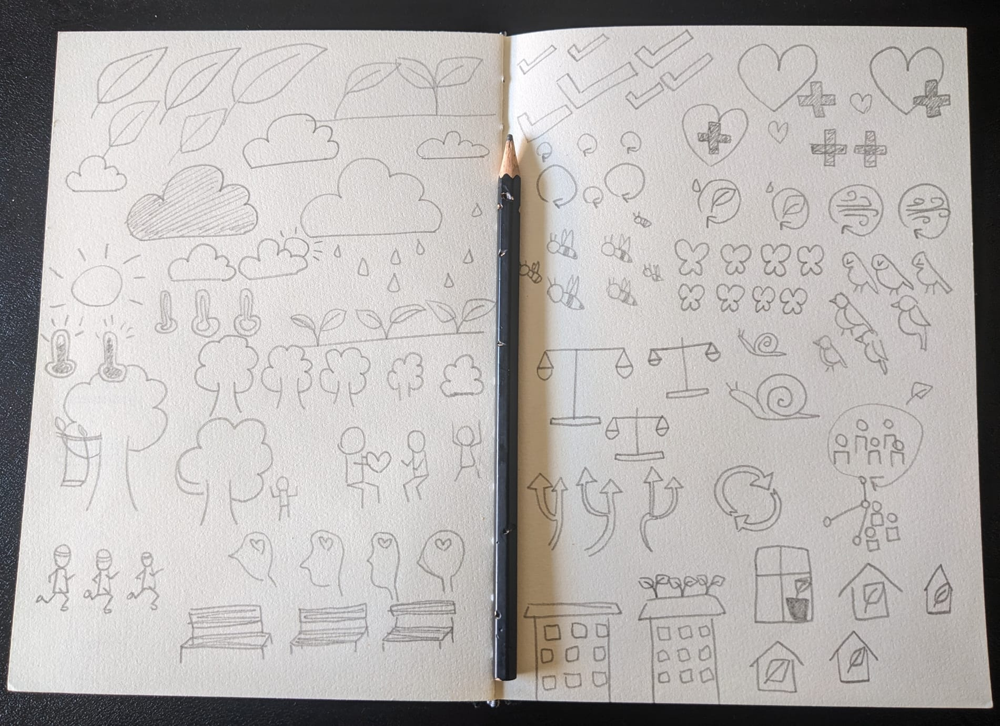
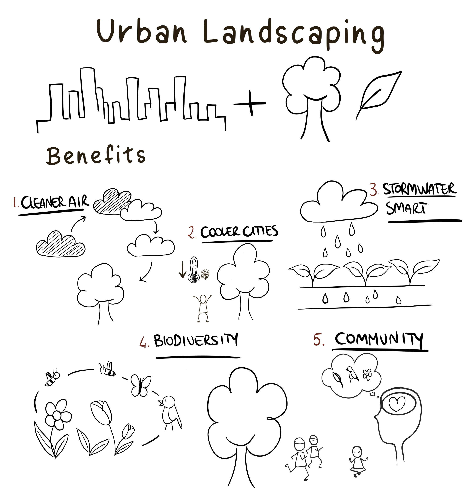

So, you want to start Sketchnoting (but don’t know how)
So, you want to start Sketchnoting (but don’t know how)
At some point between 5 and 7 years old, you learned how to write. I’m not talking about penmanship (that came later) or writing a novel (that probably didn’t come yet), but about the simple act of decoding symbols and putting them together to create sounds.
You might not remember the process now, but I assure you: you sucked at it. You had to practice for months, years, to get those symbols right. You probably learned cursive too, and that was a whole other level of hell.
But you did it. Because you had to, there was no other choice.
Eventually, you learned how to write, how to decode those symbols into sounds, put them together into ideas, and now it’s just… happening. You give it no more thought than you would give which keys to hit on the keyboard to spell a word you’ve known for years (what about typos? Typos are typing mistakes, not writing mistakes!)
Why am I starting with this topic, when I should be writing about sketchnoting? Because it’s exactly the same thing.
Sketchnoting is about drawing as much as writing is about creating a literature masterwork. You don’t need to know how to write a bestseller to write in your daily journal, just as you don’t need to know how to draw to sketchnote.
So, what do you actually need? Practice.
Exactly like you learned these weird symbols that make up our words, and had to practice to make them look readable (penmanship, here it comes), the same thing applies to sketchnoting. The more you practice, the easier it gets.
(By the way, it’s the same advice for painting, drawing, knitting, crocheting, programming, learning a new language, taking care of a dog, driving, changing a diaper, or anything else you can think of, but for most of these examples, people still reply, “I am not gifted” or “I could never do it like you do it.”. Sounds familiar?)
Then, I hope this blog post hits closer to the soul of whomever needed to know this. After reading this, “I can’t draw, so I can’t sketchnote” won’t work as an excuse anymore.
Ready?
What sketchnoting is, and isn’t

What sketchnoting is. At its heart, sketchnoting is a visual note-taking method that blends simple drawings, or icons, with text or simple annotations. The goal is to capture and synthesize information. It’s an Incredibly powerful tool for learning. And there’s reasons why (check the next section).
What sketchnoting isn’t. Sketchnoting is not about being a professional artist or having perfect handwriting. The goal is to capture complex concepts, aiming for speed and efficiency. If you need to represent a person, a stick figure is all you need. The main difference with an illustration, is the timing. Illustrations usually need time to be created: you first study the piece (e.g. character study), then make a draft, then finalise the piece. Sketchnoting happens live. You create your notes and sketches as the speaker talks, or as the meeting is happening.
The Science behind why it works
Consider a talk or a presentation. The speaker is talking quickly, and there’s no way you can write down everything they say word for word. With traditional notes, you’d try and fail, only capturing fragments. When you review your notes, you miss the connection between these fragments, or you might fail to remember what was the endpoint of a very convoluted story. With sketchnoting, you’re immediately prioritizing and simplifying as you listen. This act of active processing the speaker’s complex ideas into your own personal language of keywords and symbols is helping you learn while you listen, instead of passively writing words down.
This concept is called Dual-Coding Theory. Our brains process information through two distinct channels: a verbal channel for words and a visual channel for images. When you take traditional notes, you’re primarily using only the verbal channel. But when you sketchnote, you’re intentionally using both at the same time. This creates two “mental traces” for the same piece of information, one verbal and one visual. Because the memory is stored in two places, it’s much stronger and easier to retrieve later on.
At the same time, we all know that a picture is worth a thousand words. This is called the Picture Superiority Effect, and it’s a well-established cognitive principle that shows we remember concepts much better when they are presented as images rather than words.
To sum up, by using both words and pictures, you’re giving your brain two different ways to remember the same information! <br. So, how do you get started?
Getting started with the right mindset (or “it’s all in your head!”)
Before you even pick up a pen, you need to accept one simple truth: your first sketchnotes will probably be messy. My advice to you is “embrace the imperfection”.
The main reason why I started with sketchnoting was not to improve my drawing skills, it was because I have terrible memory retention. If I go into a meeting with only my brain to help me, well… that meeting might as well not happen, because it’s not stored anywhere in my brain. same for conferences, or a series of lectures. Conferences, to me, have the additional complication of being quite tiring, with several talks one after the other in the span of few days, with only coffee and steer stubbornness to keep me going.
Taking sketchnotes on these occasions helps me greatly to remember what was said, and what I want to take home with me. That’s why your focus should always be on function, not form.
The tools you already have (and the skills you will realize you have)
The only tool you need in this adventure is something you have with you in every situation: your brain.
While I keep repeating that you don’t need to be an artist (and I believe it), you do need to flex three key skills that have nothing to do with drawing:
Active Listening: A speaker talks at about 150 words per minute. That’s way too fast to write everything down, which is a good thing! Sketchnoting forces you to let go of the idea of capturing every word and, instead, to truly listen for the core concepts.
Prioritizing: As you listen, your brain will naturally start to filter. What’s the main point? What’s a supporting example? What’s just an interesting anecdote? This skill of prioritizing is crucial for keeping your sketchnote clear and focused.
Synthesizing: This is the most important skill. It’s the ability to take a complex idea and distill it down to its essence. When you sketchnote, you are constantly asking yourself, “How can I represent this idea with a single word and a simple picture?”
These are the real muscles you’ll be building. A fun side note? They will make you a better learner and problem-solver.
How do I do it: a Sketchnoting Case Study
My biggest roadblock when I started was “what do I even draw?” For me, the answer came from preparing for a conference. I knew I couldn’t capture every detail from every talk, so I needed a system. I skimmed the talk submissions, looked at the titles and abstracts, and made a list of the key concepts and model species that seemed most important. This manual process helped me build a targeted visual vocabulary before I even stepped into the room.


As a case study for this blog post, I wanted to show you how to do it yourself with that same approach. For this occasion, I chose a topic I have no real knowledge, but always wanted to know more about: Urban Landscaping.
Step 1: Scan for keywords
Find an article or a short video on your chosen topic. For a conference, start from the program; for a series of lectures, you might have some PDF or documents beforehand. If you have nothing, a google search or the wikipedia page will do just fine.
Read through it once, not to understand every detail, but to identify the most important, specific terms. Look for words that are:
- In the title or headings.
- Bolded or italicized.
- Repeated often.
- Nouns that seem central to the concept.
If you are following along, here are the resources I used: How Urban Landscapes are saving you and the planet: 5 Benefits of Urban Landscape Architecture, and Urban Landscaping: Transforming City Spaces in 2024 Here are the concepts I wrote down:

This instantly gave me a list of the specific concepts I needed to focus on to start building my visual vocabulary.
Step 2: Develop the icons
Once you have your list, it’s time to make your visual language. Remember, these are for you, so they don’t have to be perfect. The goal is simple, quick, and understandable.
Here’s what I came up with:

As you can see, I made some icons multiple times. Maybe I started with an idea, then I tried to draw it once or twice, and I realised if it was working or not, or if it was wasy to make, or if it was fast enough.
If a concept does not mean anything to you, or it does not spark any icon in your mind, feel free to google it!
For example, “biophilic design” was a completely new concept for me. I googled “biophilic design icon”, and I found some icons with a building and a leaf next to it, to symbolize the integration of botanical elements and urban items. If you check the lower part of the right page of my notebook, you can see that I started from a skyscraper with plants on the roof (too complex), then I tried a window (didn’t get the message through), then a house with a leaf (fast, simple).
Is it the best option? Probably not. But if I look at it, do I remember “biophilic design”? Yes!
That’s exactly the point of it! Maybe you might have a different idea, or you are faster at making a skyscraper. The key was to make each sketch meaningful to you, not to anyone else. This is where your brain takes over and the system comes to life.
Step 3: Basic sketchnoting items
Beyond content-specific icons, there is a universal visual language that goes beyond the topic being discussed. These can be, for example, arrows, basic shapes (circles, rectangles, cloud), and your own handwriting! I tried to summarise them like this:
- Containers: Use rectangles, circles, or clouds to group related ideas. For titles, use a banner or a larger, bolder font.
- Connectors: Lines, arrows, dots, dotte lines… all of those can show relationships, cause-and-effect, a sequence of steps, or maybe something yet to explore.
- Typography: Even tho I think you should not worry about perfect handwriting, you can play different letter sizes and styles to create a visual hierarchy. You can start small, for example with bold or all caps titles, and smaller body text.
Putting it all together: your first sketchnote
You have your tools, your icons, and your grammar. Now what? You have to jump in and do it.
- Choose a short, simple piece of content. A 5-10 minute TED Talk, a short article, or a chapter of a book is perfect.
- Listen or read for the main idea. Don’t try to capture every single word. Focus on key concepts and keywords.
- Translate those keywords into your icons and add them to your page. Use your containers and connectors to structure the information as you go.
- Don’t worry about making it perfect! Your goal is to process the information, not to win an art contest. It will be messy. It will be imperfect. And that is exactly what makes it a useful learning tool.
For the purpose of this blogpost, I looked on youtube a very short talk about *Urban Landscaping, and I found this one. I made a fast digital sketchnote of what I heard, I discarded some information and I focused on what I thought important.
Here’s the final piece!

From practice to performing
“Wait a minute, sketchnoting is supposed to happen live, but you just told me to practice ahead of time.”, if you’re thinking this, you are right to be confused. So which one is it? For me, it’s a bit of both.
The reality is that I, personally, do not use sketchnoting often. I do when I know I’m gonna be needing it. For the rest of the time (e.g. lab meetings, steering committee meetings, meetings with students) I am happy to take digital, or handwritten, notes.
Since I do not practice sketchnoting often, I know that my sketchnoting muscle are not always trained. That’s why I practice this 3-steps preparation before the live event. By doing this, I know that the right icons will come to mind when I need it, because I practiced them.
Let’s take back the “learning to write” example. You didn’t start by writing a story, but by practicing each letter of the alphabet until those symbols became second nature. You built a vocabulary of letters so that when it was time to write, you could focus on the ideas, not the individual shapes.
By doing the foundational work now, you are building a library of icons in your brain. This means that when a speaker at a conference says a key term, your hand will knows what to do. By doing it with topics you are familiar with, and often, and with enough practice, you’ll reach a point where you can do it live, and effortlessly, which frees you up to actively listen to the next idea.
Recommended resources to learn more
If you want to dive deeper, here are some fantastic resources that have helped me get started.
- Sketchnotes 101: A full beginner-friendly tutorial that does a better job than mine at showing what sketchnoting is and can be
- The Sketchnote Handbook by Mike Rohde: Widely considered the bible of modern sketchnoting. This book breaks down the process with tons of examples.
- Blah Blah Blah: What To Do When Words Don’t Work by Dan Roam: While not strictly about sketchnoting, this book will help you think about visual communication and why it’s so powerful.
- Verbal to Visual: A great resource with articles and videos by Doug Neill about the art and science of visual note-taking.
- Eva-Lotta Lamm Blog: One of my favorite sketchnoter, she also have a cool Domestika course for beginners!
Conclusion: go and do
I hope this has convinced you that sketchnoting isn’t about being a “gifted” artist. It’s about practice and building a system that works for you. If you learned how to write those strange, squiggly symbols on a page, you can absolutely learn to draw simple icons and connect them with your ideas.
So, grab a pen and paper and give it a try.